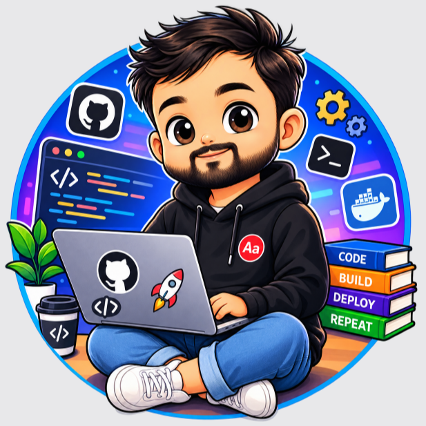

About Me- 🎓 I'm a DevOps Engineer with experience in cloud infrastructure, CI/CD pipelines, and automation.
- 🌱 Currently deep diving into AWS services and improving my skills in Infrastructure as Code (IaC) using Terraform and CloudFormation.
- 💼 I work with AWS, Docker, Kubernetes, CI/CD tools, and more to help organizations streamline their development and deployment processes.
- 🚀 Passionate about automating workflows, optimizing cloud environments, and ensuring scalable, secure applications.
- 📫 How to reach me: Email | LinkedIn | Medium Blog
💼 DevOps & AWS Skills
🌐 AWS Cloud Services
- ☁️ EC2, Lambda, S3, RDS, DynamoDB, EKS, Fargate, CloudFront, VPC, CloudWatch, IAM, Route 53
- 💡 Infrastructure as Code (IaC) with Terraform and CloudFormation.
- 🛠️ AWS DevOps Tools: CodePipeline, CodeBuild, CodeDeploy, CloudFormation, Elastic Beanstalk.
⚙️ DevOps Tools & Practices
- CI/CD: Jenkins, GitLab CI, GitHub Actions, CircleCI, TravisCI
- Containerization: Docker, Kubernetes, Helm
- Automation: Ansible, Puppet, Chef
- Monitoring & Logging: Prometheus, Grafana, ELK Stack (Elasticsearch, Logstash, Kibana), AWS CloudWatch, Datadog
- Version Control: Git, GitHub, GitLab, Bitbucket
- Artifact Repositories: Nexus, Artifactory
- Networking & Security: VPC, Security Groups, IAM, KMS, Route 53
🔧 Tech Stack
🔨 My Projects
Here are some key projects I've worked on:
🏗️ Infrastructure Automation
- Automated AWS Infrastructure Deployment using Terraform for multi-environment setups
- Kubernetes Cluster Management with automated scaling and monitoring
- CI/CD Pipeline Implementation for microservices architecture
☁️ Cloud Migration & Optimization
- Migrated on-premise applications to AWS cloud infrastructure
- Optimized cloud costs by 30% through resource right-sizing and automation
- Implemented disaster recovery solutions with multi-region deployments
🔐 Security & Compliance
- Implemented security best practices using AWS IAM, Security Groups, and KMS
- Automated security audits and compliance checks using AWS Config
- Set up centralized logging and monitoring for security events
🌐 Let's Connect
💬 Open to discussing DevOps practices, cloud infrastructure, and automation solutions.
🌍 Currently located in Coforge at Greater Noida.
"DevOps is not a job title, it's a mindset." – Sandeep